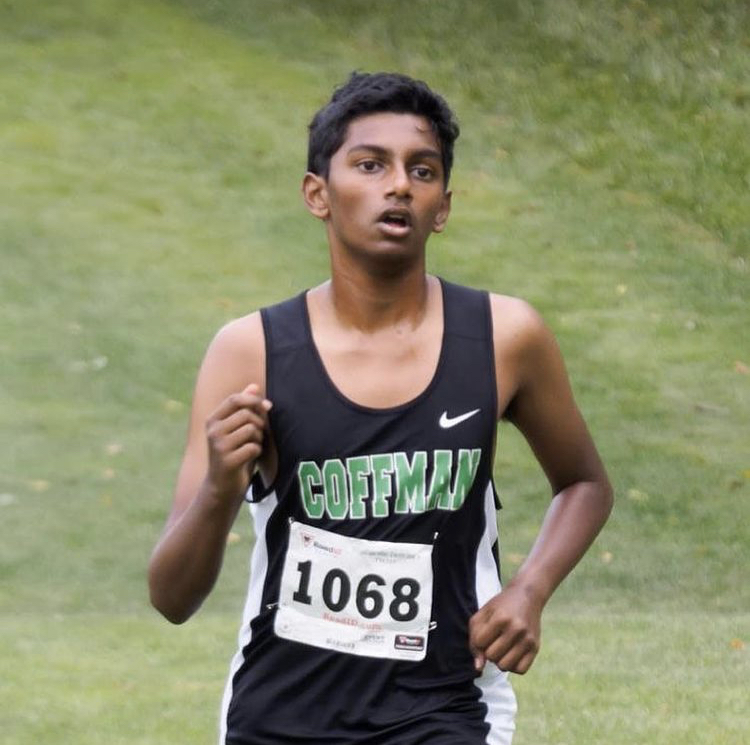

Hello, my name is Shyam Sai Bethina! I am a senior at Dublin Coffman High School and I participate in Cross Country during the fall. As I am in my final season, I plan on looking back at my previous races and see how much I have grown as a runner. I will list out the races I have ran in chronological order and list out the times I have gotten in a table. 
This is me running at Duel at DeWine's!
These are all the races I have ran:
These are the times at each meet:
| Pickerington North XC Classic 2019 | 23:24.1 |
| Duel at DeWine's 2019 | 22:25.46 |
| McGowan Invitational 2019 | 21:21.30 |
| Les Eisenhart Invite 2019 | 20:43.4 |
| Celtic Clash 2019 | 21:05.70 |
| OCC 2019 | 20:21.57 |
| Dublin Coffman v. Orange 2020 | 19:59.00 |
| Dublin Coffman Tri-Meet | 20:35.9 |
| Dublin Coffman Invitational 2020 | 20:07.15 |
| Lancaster Invitational 2020 | 22:09:.19 |
This link shows you my MileSplit profile, which has all the stats! Thank you for looking through my seasons!